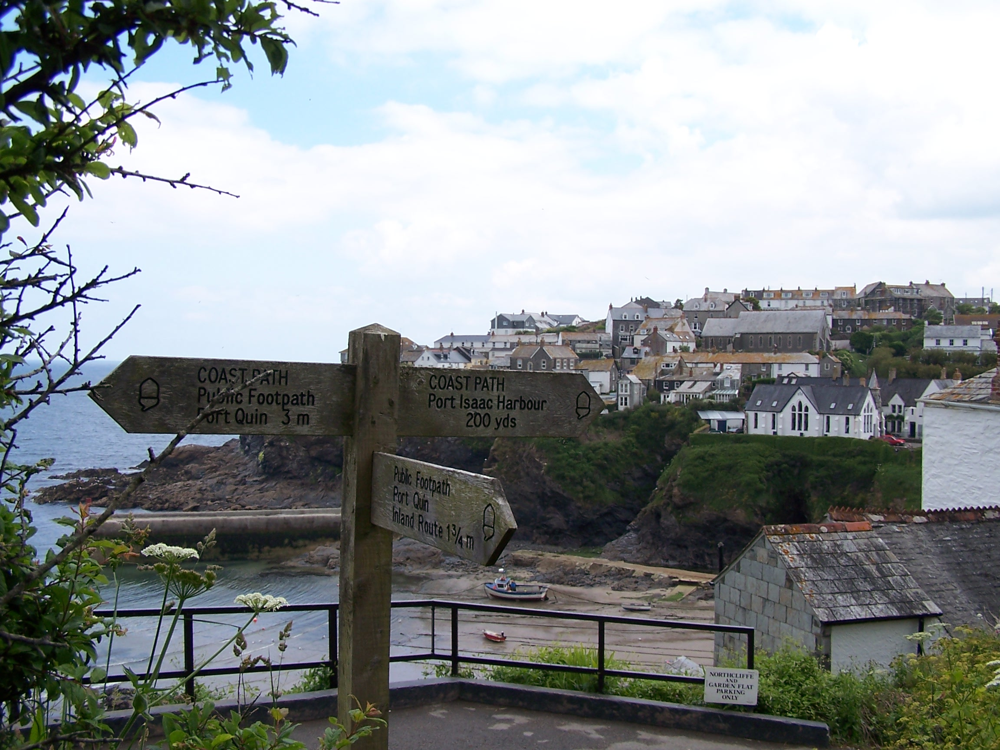
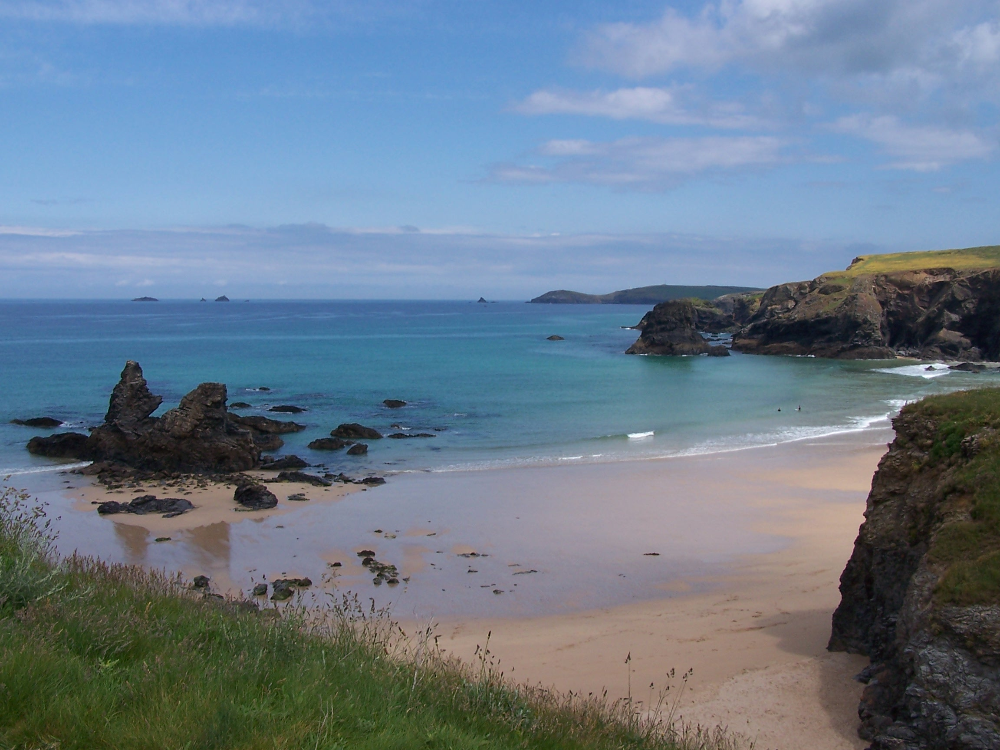
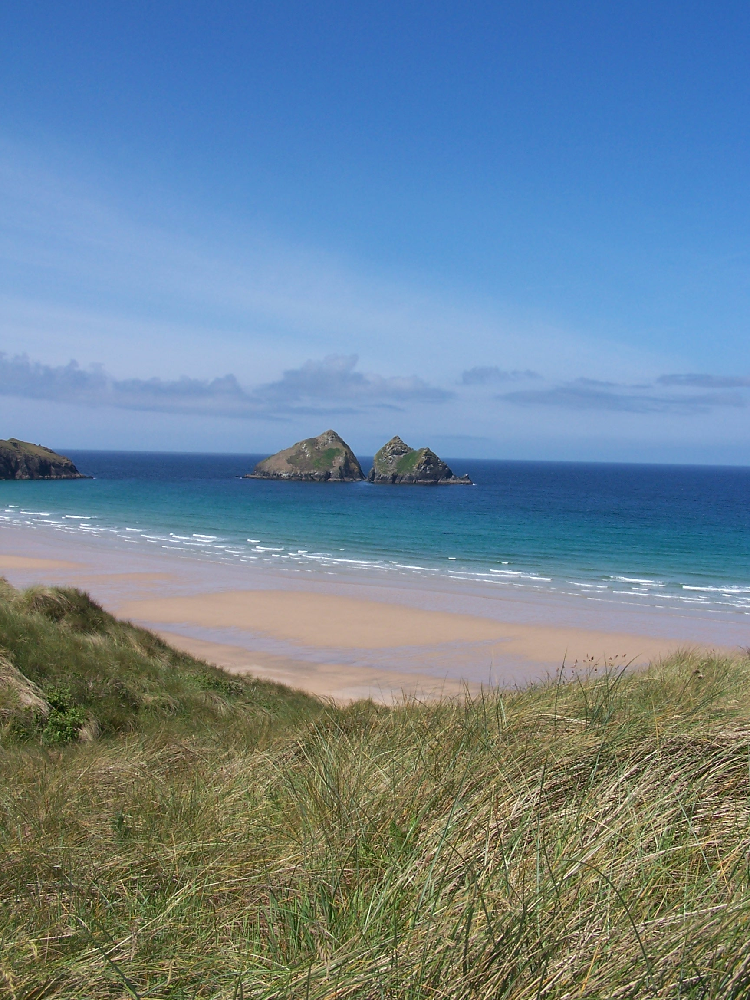
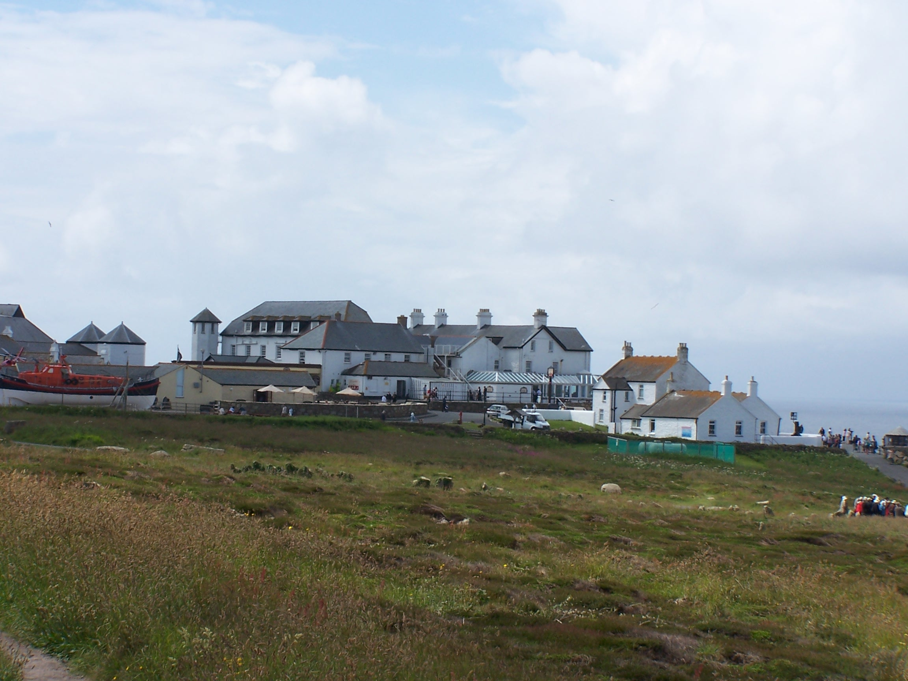

The Southwest Coast Path to Lands End
Saturday 6th June Instow to Stoke Barton
Tarmac cycle path, a bit of road and some Steep coast path
22 miles approx
There was lots
of toast with the Breakfast at the Wayfarer Inn. I paid the £50 and
headed out into the dull grey outdoors. It was already spitting with rain as I bought
supplies from the local shop and posted the last
map home from the Post Office. As I rejoined the cycle track (also the
coast path) I stopped to put on my waterproof jacket. It was a hard and
fast
stomp along the straight level path to Bideford where I crossed the
river into the town. On the way out I found a cheap shop and bought a
new walking pole
for just £10. I was anticipating that the ups and downs of the
coast path would be made even harder without the support of a pole.
Rather than follow the coast around the headland walk I decided to
cut across making use of small roads via Abbotsham and Greencliff
to join the coast path proper. As I left the lanes and roads and came
out on the path I had an imense feeling that I'd reached the
last part of the walk. Stood looking out to the Atlantic for the first
time I was happy to
have reached the sea and was looking forward to a sunny coast walk.
Hmmmm.
However as I looked ahead along the towering cliffs I was puzzled at
why they just
stopped not that far away. It wasn't too long before I found out.
A
bank of heavy rain was making its way towards me swallowing up the
cliffs in grey as it approached. So much for sunny walking. The coast
path was immediately very steep as I climbed Green Cliff,
Cockington Cliff, then it was right down to the beach before an
immediate climb right  back
up onto Westacott Cliff and Babbacombe Cliff, then on from here one
Cliff after the next. All text on this path warns of it relentless
difficulty, especially on the northern section. It was on with
the waterproof trousers and gaiters as the grey cloud
consumed me and the rain came in hard. The path was somewhat
sheltered with old wind swept trees and bushes that had been blown
and shaped over the years. It felt like a real smugglers hide in parts.
The shelter
didn't last though as the heavy rain
simply cascaded through the leaves and on to my head. By lunchtime I had reached the
Holby Drive. This is a made path (Victorian) that followed the cliffs round to the little fishing village of
Clovelly. I decided to try a path up to the road but came to a gate
(after 20 mins) with Private Keep Out. I had no choice but to back
track. This wasn't making me happy. The rain was coming through my waterproofs by now. Hmmm. This was by far the
wettest day on the southern section. The weather was draining me so I
decided to take leave the coast path and head inland using back roads from Clovelly. At Hartland I bought a
few bits from the Post Office then followed the road past Hartland Abbey
to the little village of Stoke Barton and the Campsite. Just as I arrived It stopped raining.
Woo Hoo! I put tent up in one of the fields and had a shower in a very
shedlike shower. I found a washing machine in another outshed and washed and dried clothes all my clothes . The
campsite owner gave me some powder for free. Thanks. I spoke with
Lorraine whilst walking to the Church with the warm setting sun. (I didn't expect to see that today) I only hoped that the
sun would hang about for tomorrow.
back
up onto Westacott Cliff and Babbacombe Cliff, then on from here one
Cliff after the next. All text on this path warns of it relentless
difficulty, especially on the northern section. It was on with
the waterproof trousers and gaiters as the grey cloud
consumed me and the rain came in hard. The path was somewhat
sheltered with old wind swept trees and bushes that had been blown
and shaped over the years. It felt like a real smugglers hide in parts.
The shelter
didn't last though as the heavy rain
simply cascaded through the leaves and on to my head. By lunchtime I had reached the
Holby Drive. This is a made path (Victorian) that followed the cliffs round to the little fishing village of
Clovelly. I decided to try a path up to the road but came to a gate
(after 20 mins) with Private Keep Out. I had no choice but to back
track. This wasn't making me happy. The rain was coming through my waterproofs by now. Hmmm. This was by far the
wettest day on the southern section. The weather was draining me so I
decided to take leave the coast path and head inland using back roads from Clovelly. At Hartland I bought a
few bits from the Post Office then followed the road past Hartland Abbey
to the little village of Stoke Barton and the Campsite. Just as I arrived It stopped raining.
Woo Hoo! I put tent up in one of the fields and had a shower in a very
shedlike shower. I found a washing machine in another outshed and washed and dried clothes all my clothes . The
campsite owner gave me some powder for free. Thanks. I spoke with
Lorraine whilst walking to the Church with the warm setting sun. (I didn't expect to see that today) I only hoped that the
sun would hang about for tomorrow.
Sunday 7th June Stoke Barton to Bude (Cornwall)
Steep coastal paths and some little back roads
21 miles approx
I woke
with rain pitter pattering on the tent. Not at all what I was hoping for.
I lay there Listening as it was getting heavier and heavier, watching as drops ran
down the flysheet. I decided not to rush and instead wait until 8am to get
up. However not long after
it stopped and I got up and dried the tent off in a bit of brightness. I was
away by 9am and heading down to the coast path at St Catherins Tor. The
steep up and downs went on and on as I headed along the coast. At
Wincombe Mouth I crossed into Cornwall, passing a little wooden sign to
show the transition. At the top of a very steep climb out of Marsland Mouth I met
an old guy leaning on the stile. I stopped to chat with him for a
while.
Ted Mathews is a nice guy who has seen and done a lot in his
life. He served in the Royal Navy during the second world war as a gun boat
operator in Burma and minesweeping in Scotland. He was
staying locally whilst on holiday. He asked me if his eye looked ok. Puzzled I asked why. It turns out that he
has a false eye and was worried that he hadn't put it in. Lucky for me
that it was in. We talked about the peace and quiet that the coast path
offered and listened to the sea rumbling
below the cliffs. He told me
that I looked like I was too thin. I told him about the walk
and about the miles that I'd covered. No wonder I was a bit thin.
On I walked
after wishing him a nice day. The sun was out again and hot. Another
very steep up and down
into Lither Mouth, then from the top of Henna Cliff I decided to take a
different route so I cut along into the village
of Morwenstow and found a little road that ran in the same direction of
the coast to the Coombe Valley, passing the Radio Station, a GCHQ
installation with lots of radar dishes. This is a suspicious looking
place. I was half expecting to be arrested for walking past. After
a steep road cimb out of the Coombe Valley I found a green
bridalway that took me back to the coast path at Menachurch Point. I
sat in the sun for twenty minutes just watching people milling about.
This
was a busy bit of the path being so near to Bude. On the other side of
town I could see some heavy looking rain clouds building as what looked
like a twister too. I needed to
get a shift on. As I entered the town area through the golf course, it
started to rain, heavy drops. I pushed on and asked someone where the
Brendan Arms was. Lucky that I asked as it was back the other way. It is a nice
pub and nice room. There was a Bath. Wow. I needed that. The TV had a crap signal
again. Why???
Had dinner in my room. Pasty and crisps as I was tired
and didn't feel like a big meal. A good day. Tomorrow familiar turf
when I arrive at Tintagel.
Monday 8th June Bude to Tintagel
Steep coastal paths and some little back roads
21 miles approx
A nice
bath to start the day at 6:30am. I had taken the time to hang everything
up in the room overnight so it was all nice and dry after Saturdays
rain. The breakfast was nice but the price was even nicer
at just £33 for B&B. That was probably the cheapest night on the
whole walk.
After a visit to the post office for a few supplies I headed out of
town in the wrong direction at first. When I realised I had to walk
back past the hotel to head out the correct way. I stayed with the road
at first and joined the coast path at Upton. There were low
and rolling cliffs at first up to Widemouth bay. The sun was now trying
to
come out just as the climbs got steeper. Again the day became steep
stepped ups and downs and lots
of them too. I eventually dropped down to St Gennys Church and
back to join the coast path just beyond it. This alowed me to miss
out one
of the climbs. Now I pushed on to Crackington Haven which is a
nice little place, but
the weather was threatening and I had a lot of distance still to cover.
The cloud was building up very dark and grey. The wind was picking up
too. Rain was
coming! I used a minor and very steep road to Trevogue, then joined a
bridal way out and back to the coastal path. The rain started and it
came down
heavy. With my waterproofs on I decided to stay with a minor roads into
Boscastle.
It came down really heavy now. Boscastle was busy with day trippers all
running from their cars into shops. I stopped in the bus shelter. I was
wet and
probably looked like a bum. I took
the old road out of town and joined the busy B-Road again heading out towards
Tintagel. This wasn't the weather for slogging it out on the coast path.
I found and followed a little footpath through Travalga. As it passed
through Welltown Manor, the waysign was obscured by plants and two
yapping
dogs came running out at me. Mithered, I ended up heading the wrong way
and into the
gardens. The owner came out and pointed out the route that I'd missed.
After a few field crossings through cows and over old stone stiles I
was in
Travalga. Not the place where Nelson fought and beat the Frogs. The
path emerged on the B-Road again at Threthevey where there was
a handy footpath that allowed me to walk straight into Tintagel
along the
road. The rain had just stopped so it was off with the waterproofs and
I tidied
myself up a bit before finding the Kings Arms. Lorraine and I
had stayed here
some years ago and I stayed in the room next to the one we shared then.
The room was nice. The pub is old and across the road from the Old
Post Office building in the older part of town. I
dried everything with an electric heater while I had burger
and chips and a pint of
cider in the bar. In my room I watched Deal or No Deal. I'm starting to
get into
this being that it is on when I finish walking and get into a B&B.
I watched Zoolander before hitting the sack. The locals were noisy in
the bar and out on the street until after Midnight but I was too tired
to be bothered. Breakfast not
available until 9am in the morning so at least I'll have a late start.
Tuesday 9th June Tintagel to Padstow
Steep coastal paths and some little back roads
25 miles approx
It was a nice
breakfast, even though it was a little late being 9am. I felt that I had a big day
ahead and needed to get a shift on. Still, looking through the window, it was nice outside being sunny and
warm already. I bought a few supplies from
the local SPAR over the road before taking a small back road past the
old church
and crossing a couple of stone stiles back to join the coast
path. From the
cliff I could see Port Isac some way ahead along the coast. A couple
who were walking
the other way, told me that between Tintagel and Port Isac there are
seven steep climbs and drop downs into coves. Argh, would it have
been better not to know in advance? The first three, ending with
Backways Cove were tough going. The first, Trebarwith Strand, was a
real
killer with over a hundred steep steps climbing out of the cove. In
total I
counted eight steep coves along the route, with a ninth into Port
Gaverne,
sneeking in just before Port Isac. Entering the small fishing town from
the north it looked a bit run down and boring, but dropping down to the
harbour, it started to look a little bit like St Ives with little
streets and shops
and lots and lots of people. This busy even in the middle of the week?
I took a signed route out
of town along an old bridal way. It took me slightly inland as it
cut across to Port Quin. This route was signed at only 1.75 miles
as opposed to 3 miles around the coast. Nice little shortcut. At
the top of the tree
lined bridalway, just as the path opened into some fields, I came to a
stone
stile. This stile was different in that it had a herd of bullocks
trying to get over it to join another
group on the other side. I shewed them off and got over. As I
progressed I looked back to see that the bullocks had climbed back up again.
I followed field paths down to Port Quin, where I took a minor road
inland heading towards St Minver. I phoned a campsite at Trewiston farm
and confirmed that I could camp there tonight. I followed minor roads then
some very overgrown and ploughed out field paths into Tredrizzickbridge. I
then walked along the road to the campsite. The campsite was ideally located being less than a mile from Rock on the
other side of the River Camel. It was very
quiet too. I laundered my clothes and had a nice hot shower. In the
laundry I found a flyer for a pizza delivery so I called and ordered a
ham and pineapple, then waited in the tent for it to arrive. The site
was only £8. The pizza arrived. It was nice to have some hot grub.
I talked to Lorraine and she booked the hire car online for me for the drive
home on Monday. The end was that near. I was a bit sad really. It looked like rain
outside with dark heavy clouds building but it stayed warm and dry all
night.
Wednesday 10th June Padstow to Newquay
Coastal paths and some little back roads
20 miles approx
It was a
very warm night and I was already heading to the showers at 6am. Ready and packed away, I walked back
into Tredrizzick and followed the road a mile or so down to the port at Rock.
I found a newsagent and stopped for a few supplies. It
was a quiet walk down to the ferry point where I read a sign
instructing me to wave a
red flag if I wanted to summon the ferry. Hmmm. I sat around looking at
the white sand and clear water. I was too early for the first
ferry. When the time came I waved the flag like a pleb, the
ferry stayed at
the far side. Hmmmm. Another guy turned up and suggested that I
called the contact number
instead. This worked and the boat pilot told me he was on his way. So
much for the
flag. The short crossing is the official SW Coast path and cost
just
£1.50. The water of the River Camel estury was crystal clear as
the flat looking boat zipped through it. The
crossing was short and I soon found myself in Padstow looking back over
to
Rock. Padstow looks really nice, I could tell that later in the day
this place would be bustling with holiday makers. There are lots of
little shops and
eating places, a bit like St Ives. Rick Stein runs a restaurant and
some food shops on the front. Being quite early, the small
streets were quiet as I walked
on through, uphill on my way out of town. Having joined the
A839, I passed Tesco and then found that the
pavement had run out. I had to risk life and limb on a short bit
of busy road.
Lucky it wasn't for long before I was on a quiet country lane again.
Taking the road route I was
cutting the corner of the coastpath and heading along Greenlane to
Trevone where I
joined it again. A mile further along, at Harlyn, I cut
another corner using small lanes to Constantine Bay, taking a
road through Trevone Golf course.
It was starting to get warm
with the sun coming out between the clouds. The coast path in this
section has been really nice walking and is no where near as hard work as the northern section. I
was making much quicker progress as a result. At Treyarnon bay I was
tempted by a
snack van offering Cream teas, but it wouldn't be open until 10am, a
wait of
over 20 minutes. I decided to press on instead and save the cream
tea. I bought some
supplies from a shop at Porthcothan. The coast and beaches here are
really
beautiful with very bluegreen sea, white sand and sunny skies. I was
now thinking of
the finish line being that it is not far at all down the coast
ahead of me now. In fact it would be just over three
days ahead. At Mawgan Porth I stopped at a beachside cafe and got a
cream tea that had my name on it. It was the first since Broaford, the
first with clotted cream and it was really nice with a huge pot of tea.
I guess that it was better than the one I could have had back at
the snack van! That was lunch anyway, a Cornish lunch. I walked on
and past a cliff outcrop of Beryl's Point. I called my mum from
here being that it is her name. From the cliff I could see Newquay
on the coast ahead. I arrived at
Porth Beach campsite at 3pm. I had stayed here quite a few times over
the year with
Lorraine. It is just 20 mins walk from Newquay.
For quite a
few year we would camp here for a weeks holiday. I pitched
the tent near the river, between some big house
sized tents and headed to the showers. I washed the clothes in the
laundry
and headed to the shop on the front and on to the beach. It was a
really warm afternoon in the sun. The phone signal was weak on the
site, being in a valley, but it was ok as I walked
up onto the headland at Porth Island overlooking Newquay just in front
of me. I
didn't fancy staying in town with my rucksack. Newquay is a busy
place. I headed back to the tent for the night and listened to
some music before
zonking out.
Thursday 11th June Newquay to Portreath
Coastal paths and some little back roads
24 miles approx
It was a cool night. I woke but decided to reset the alarm and have a lie in until 6:30am. The flysheet
was wet with dew so I dried the tent and packed it up before heading into Newquay
following the back
roads that Lorraine
and I would walk when we were on our holidays. The town was deserted
being so early. I
found the point where a decision needed to be made as to whether to
walk around the long estury or cross a bridge which is only
usable at low tide. The choice at high tide is being
rowed across the 20m crossing in a little boat for 50p. I headed around
the headland
and came across three guys walking with packs on. We got talking an and
I found that one of them was
walking the Coast Path. His friends were walking
along side for a couple of days as far as St Ives to offer him some
support. He was collecting for
Help the Heros so I donated £10. The tide was in and still too high so
we had to
wait until 10am to take the row boat over together. The crossing
was litterally just twenty metres of crystal clear water before we were
on the white sandy Crantock beach in the already scorching sun. I said
my goodbyes and wished them luck. I wanted to pace it out early on as I
needed to make good time today
with a longish push to get me to Portreath.
The first
half mile
took me through some large white sand dunes as I climbed up and
along the coast
path. These were hard work, walking through deep and loose sand. I had
to put the sun cream on again as I was already cooking. There was
little choice but
to stick with the coast path here as after
Pentire Point West the inland area is
owned by the MOD. Holywell beach meant crossing and climbing through
some very big and steep dunes. It was really tough going in the sun.
The beach was quite busy. After this the MOD area begins. The path
skirts a large fenced area
with strange buildings. Here I saw a quite a few army lads coming and
going from
tin huts.
One shouted over to me 'Alright Mate'. I acknowledged. You do get
a feeling that you shouldn't be there. But the path is clear. There
followed some very high up path walking, following along the edge
of great steep cliffs overlooking Perren Beach. As I dropped
steeply
down to the beach I met an American guy who remarked on this unusually
nice British weather. The beach was imense, being at least thee miles
long, and
with the tide out at least half a mile wide. I walked down a
bit on to the wet sand
as it made for better walking progress. The beach wasn't that busy at
this
end, but as I approached Perranporth at the far end it was heaving.
Lots of lazy sods who wouldn't walk along a bit. I bought
a drink at the beach shop and headed on along the coast path. It was
too busy here for me to hang about. I
followed the path along past a little airfield that seemed to be quite
deserted. A
few little planes were sat about but nothing was moving. I dropped
steep
down and had a hard climb back up from Blue Hills Tin Streams. On the
way up I met a
couple of old ladies who remarked on my speed of climb. I was probably
more surprised that they were walking about up on these cliffs being so
old. Tough old people must live here. I sat on a bench at the top for
ten minutes before pressed on. Not long ahead I found a
finger post directing me inland on a path to St Agnes. I decided
to take it and soon
found myself in the little town. I skipped the centre and found a shop
and bought some
supplies. Again using little back roads through Bolster I made my
way back to the
Coast Path at Chapel Porth Cove. As I climbed up onto the next cliff I
met a guy walking the coast path with his dog. He was going the other
way so I didn't talk for long. I wanted to get to my B&B and still
had 5 miles to go.
Porthtowan
wasn't very exciting. This is where the guys I met back in Newquay were
staying. Out of town I was walking along a very long fence with
MOD signs attached. This contained a radio station complex (big ball thing) and an
airfield. As I
approached Portreath from the north the coast path had collapsed into
the sea and I was diverted to follow the top road down to the
harbour. My
B&B was up the road heading out of town towards Bridge. Moor
House was lovely and
the owners, an American lady and her husband from Bolton were chatty. I
talked with them until another guest, a woman from Denmark, arrived.
My
room was small but nice. I showered and headed to the pub in town for
dinner and a Cider before returning to my room to watch Elizabeth on DVD. I
was feeling a bit over sunned today.
Friday 12th June Portreath to St Ives
Coastal paths on SW Coast Path
20 miles approx
Breakfast
this morning at the table with the other guests. One guy from
Australia, the lady from Denmark, me and the hosts, Joe and Maria. The Ausie was
over in England attending mining conventions.
He was in Cornwall looking at Tin Mining and then next week heading to
Matlock in Derbyshire. Strange that out of the
five people in the room, Joe and I are from the North West, The Danish
lady had been there walking, and the Ausie is heading there in a week.
All knew that the northwest is known for its wet weather. Talking of which it was drizzling
outside today. I had a very full breakfast, it was really nice. Maria and Joe
really make the effort in every way. I headed off at 9am, walking back up the road
into town and then up to the beach front. It wasn't so beautiful on this grey and wet
day. I walked up and on to the coast path. I'd walked this section a
couple of years ago with Lorraine so it was all nice and familiar and not too hard,
just head down and stomp on in the drizzle. I had told Maria that I wanted a
cream tea at the Hells Mouth Cafe but was thinking twice as I plodded
on along the cliff tops in the drizzle. However as I arrived the rain had stopped and it was warming up a bit.
I stopped and had a really scrummy cream tea, and even sat out to
eat it. The scones were fresh out of the oven. The next stage after
rounding the headland of Godrevy Point was a long 4 mile walk along the
beach at Hayle. At Gwithian I headed into the dunes. This was hard
walking as the sand here is very soft, but once I was in I was held in, faced with
steep sand cliffs if I tried to make it back to the beach. I continued up to the St Ives
Caravan Park and found my way down to the beach. We stay at this site
most years so it was again familiar walking. By now the sun was out and hot. I
came off the beach, following acorn signs for the Coast Path, and
headed into Hayle. This involved a long walk inland around the hayle
estury. I was now on the path into St Ives. The sun was really hot as
I came along the coast and towards the beach at Carbis Bay. The path
was lined with low wind swept and weathered trees. These offered
some shade and hid the fact that the path was right on the edge of a
very
steep drop into the sea. Carbis Bay beach was quite busy. I didn't stop
as I
wanted to get to my campsite and get cleaned up. The path round to
Porthminster beach was under tree cover too. I decided not to head to
the beach at St Ives just now and instead headed up to the main road
into the town and continued the climb up and out of town towards
Hellesveor and the campsite.
Everything about St Ives is steep. The site was quite busy and very
small. Just a little field at the back of the farm yard. Still I found
a patch of green
and put the tent up. The sun was still very hot. I got showered and
washed my clothes in the washer. Just as I sat down a bunch of cyclists
turned up and put 4 tents up in the little space next to mine. I
decided to head into town for the evening. Just as I left some Russians
turned up with two cars and loud music booming out of their boots.
Hmmm.
I didn't think I'd be sleeping much tonight. Still I was having a rest
day tomorrow. I walked around the town in the evening sun. It was
really nice and not too busy. Went to the cinema (flea pit) and watched
 Angels
and Demons with a bucket of Popcorn. Afterwards I took a dark walk back up the hill to
the campsite fully expecting a rave to be in full swing. But it was very quiet.
Well at least until the cyclists came back and started setting up their
tents at past midnight. Still I was jaded and zonked out anyway.
Angels
and Demons with a bucket of Popcorn. Afterwards I took a dark walk back up the hill to
the campsite fully expecting a rave to be in full swing. But it was very quiet.
Well at least until the cyclists came back and started setting up their
tents at past midnight. Still I was jaded and zonked out anyway. Day off tomorrow.
Day off tomorrow.
Saturday 13th June Day Off at St Ives
Nice
lie in this morning. The sun warm on the tent. I walked down to St Ives
in the sunshine. A lazy day today. I just sat on the harbour wall until the cloud
started to build a little. I met the three guys
who were walking the coast path for charity. They were having a rest day too. The one doing
the whole walk. Richard. Had a swolen ankle. I told him that I'd had
the same problem and you just need to walk it off. They were heading to
catch a seal boat trip. I had decided to head to the cinema in the
afternoon to watch Terminator but I had to have a cream tea first. The film was ok.
Not great. I headed back to the campsite, stopping for supplies from COOP
first. I was booked into a hotel tomorrow night at St Just. This was to be
the last night. The end was close. Very close. I was having mixed
feelings. I was about to complete the longest walk I've ever done and
that felt great, but I was about to end a great adventure and head back
to normality and that didn't.
The campsite was busy again and this time quite noisy. Still.
Sunday 14th June St Ives to St Just
Coastal paths on SW Coast Path
20 miles approx
Banging
van doors woke me several times in the night as the tw**ts in the
surfer vans were up for the loo. Still vengance wasn't on my mind
today. Though curling one out just outside
the van door did cross my mind. I was up nice and early. Instead I just took the
road out of St Ives in the sun, heading towards Trevaga Farm. The sun was already
high and hot as I re-found and joined the coastal path. There had been
some landslides earlier in the year and the coast path had been
diverted along this section taking it inland twice. As it happened I joined it at
the first of these. It was nice to get back to the sea. So blue. My
hayfever was beginning to plague me however, having been walking through the
high grass of the inland diversion. As I walked I could see the pollen
dusting up in clouds around me. Yuck. I joined the coast at River Cove
and started to climb up the first of many steep rocky cliffs. The path
was quite overgrown in parts and big bolders covered areas making
walking a lot tougher. The path crept quite close to the waters edge
and sometimes a bit too close to a cliff edge or two. At Zennor Head the path
was diverted inland again. It headed into Zennor village. Zennor
is a nice little place with a church and a little plague bowl at the
roadside on the way in. This is where money for food was left during
the plague in a vinegar filled hollow in the stone. Nice. It was really
sunny and very hot
now. I headed on following signed inland paths through fields, over old stone
stiles on towards Treen. After a little road walk I rejoined the coast
path proper at Gurnards Head. Porthmeor Cove has a nice little beach
and it was quite busy today, being a very sunny Sunday. Portheras cove was very
nice too, but it was heaving. Perhaps it was the fact that there is a carpark just near the
lighthouse at Pendeen Head.

The path here takes a route through old mine workings and engine houses. Here the path became many paths and the route wasn't
clear. At one point I followed a low path that came to a rocky climb
and scramble and at the head it dropped off in a steep stone shute. At
this point, with a heavy pack I was stuck (quite litterally) and had to
head up and over to find and follow a higher and easier path. Still it was an
adventure. I eventually came to Kevidjack where I could see Cape
Cornwall and the lighthouse ahead. I've stood on the headland at cape
cornwall before and looked down the coast at Lands End. I didn't want
to see it today. That would be for tomorrow, so I headed inland to St
Just. It was steaming hot. Today had been a scortcher. I was ready for
a shower and lie down. I fould the Commercial hotel in the square and
was shown to my room. Wow two free bottles of wine. The room was nice
too, but it had a noisy waist water pump that kicked in when I had a
shower or slash. Watched Deal or No Deal which had become a regular
thing. Headed out briefly and bought a few bits from the COOP before having dinner in the
hotel. A couple of Bulmers and fish and chips. It was ok. Back to my room. I zonked.
two free bottles of wine. The room was nice
too, but it had a noisy waist water pump that kicked in when I had a
shower or slash. Watched Deal or No Deal which had become a regular
thing. Headed out briefly and bought a few bits from the COOP before having dinner in the
hotel. A couple of Bulmers and fish and chips. It was ok. Back to my room. I zonked.
Monday 15th June St Just to Lands End
Coastal paths on SW Coast Path to the end
9 miles approx
I had a
late start today. I didn't sleep well thinking all night about the end of the walk.
It was the last day. The last day. With only a short walk today being less than ten miles to
complete this 1300+ mile walk. What an experience.
After breakfast I got everything together for the last time. I was a
bit sad. I bought some pasties from the Warrens Bakery on
the other side of the square. I would be taking these home. I rejoined
the coast path. Some guys were starting to strim the path. What a great
job this would be. The sun was out and hot already. There was a large
block of cloud
out to sea but as of yet on the horizon. The forecast was for rain
later. I was hoping
that it would come much later, when I'm done. The sea was very
green/blue, this was
definetly the right way to walk and the best place to end the
adventure. I imagine that the coast at John O'Groats would be just as
nice,
but not as sunny and certainly not hot. Lands End and Cape Cornwall
were visible
along this whole length of coastline, and Lands End was getting
closer with each step. Sennen Cove is a really nice little
place, the beaches were crisp white against the
blue sea. I pressed on, the end being just a mile further on. Over one
last cliff and I was now approaching the hotel complex at Lands End. I
had quite mixed feelings. I did't want to stop yet I wanted to finish,
and in
the back of my mind I was looking forward to getting home and seeing
Lorraine and sleeping in my own bed too. Home was till a long way away
though.
Poinient, dark clouds were coming
in from the sea. I had to get my photo taken before it rained. As I
approached the photographer there were people looking to have their
pictures taken showing how far they had driven to get here. I was the
only one here who had walked it. That felt good. I paid and had the picture taken. The sign read, John End to End DID IT!
He also took a picture on my mobile. That was it. I had done it. As I walked
away a guy asked if I had walked the whole way and congratulated
me for doing so. I called and texted people, bought and posted some postcards
then called a taxi. It would cost £20 to get to Penzance. The driver was very
interested in my walk too. He wanted to do it himself and I pointed him in the
direction of the Andy Mcloy book that I had read as a guide to help plan
the route. I picked up the car from Europcar on the harbour and drove to
St Ives. It only took 30mins. Nearly two days walk. I bought a few bits including rock and fudge
for people at home. On then all the way to Blackwater on the M5 where I stopped at
the Morrisons that I had walked past nearly two weeks ago. It took 3.5
hours to drive.
I bought flowers for Lorraine as a thanks for the
support and drove on and home. The M5 then M6 and before I knew it I was home
and it was 9:30pm. I was happy to be home, happy to see Lorraine. Job Done. What next?